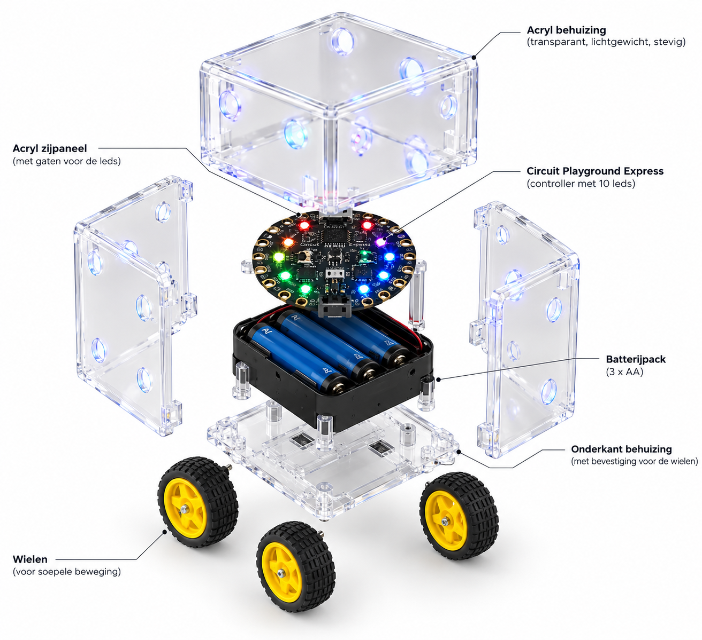

Stel je timer in
Kies hoe lang je wilt focussen en zet Rollix naast je neer.
Ontdek Rollix: de slimme robot die technologie, creativiteit en innovatie samenbrengt. Experimenteer met ledverlichting, programmeren en eindeloze mogelijkheden.



Over Rollix
Rollix is een compacte, programmeerbare robot die technologie op een interactieve manier tot leven brengt. Dankzij de transparante behuizing, kleurrijke ledverlichting en slimme elektronica is Rollix niet alleen bijzonder om te zien, maar ook leuk om mee te experimenteren. Ontdek de wereld van robotica en laat jouw creativiteit de vrije loop.
Studeren vraagt om focus en discipline, maar het is niet altijd makkelijk om gemotiveerd te blijven. Rollix maakt studeren interactiever door tijdsbeheer te combineren met beweging en geluid. Als slimme timer helpt Rollix studenten om in actie te komen, hun aandacht erbij te houden en hun schoolwerk stap voor stap af te ronden.
Bekijk de handleidingHoe werkt het
Kies hoe lang je wilt focussen en zet Rollix naast je neer.
De ledverlichting laat zien hoeveel tijd er nog over is.
Rollix rijdt en geeft geluid zodra het tijd is voor een break.
Bekijk de handleiding en ontdek wat je allemaal met Rollix kunt doen.
Bekijk de handleiding